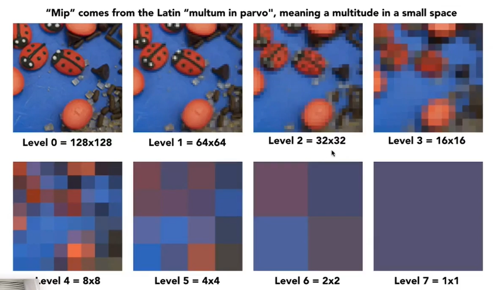

[图形]着色
在将三角形光栅化后，可以把所有像素画在了屏幕上了，那么每个像素应该是什么颜色，就是着色要解决的问题。
词典里对着色的定义是：引入明暗或颜色变化的过程。
图形学上的着色也差不多，只是换成了将材质应用到物体上的过程。不同材质与光线会有不同的相互作用的方法。
Blinn-Phong Reflectance Model

现实中，物体可以被观察，是因为人眼接收了从物体来的光线。一般这些光线可以分为三种：
- Specular highlight 高光
- Diffuse reflection 漫反射
- Ambient lighting 环境光
我们把这三个光线结果叠加起来，就是Blinn-Phong反射模型的结果。
这里考虑的光照，都是考虑某一个点的光照结果，这个点叫做 Shading point 着色点。对于一个着色点，它一定在物体表面。此外，我们认为在物体表面局部很小的区域，它是个平面。
关于着色点的一些定义：
- n向量表示这个平面的法线方向（Surface normal）
- v向量表示这个着色点到摄像机的方向（Viewer direction）
- l向量表示这个着色点到光源的方向（Light direction）
- 以上向量都是单位向量
- 还有着色点本身的属性，它和物体表面有关，比如颜色、光滑度

此外，着色是局部性的，我们只考虑着色点自己的属性，不考虑这个点和其他物体联动的情况，例如阴影。
Diffuse Reflection 漫反射
当光线射到一个点上后，光线会被均匀的反射到各个不同的方向。


但是不同的入射角度，结果的明暗是不同的。相同的光线射入同一个点，为什么入射角度可以影响结果？
不同的角度，能反射的入射光线量不同。更科学的解释是，相同表面积，接收到的能量不同，夹角越偏接收能量越少，反射的能量越少。
Lambert余弦定理（Lambert’s cosine law）：cosθ=l·n。着色点接收到的能量，和 入射光线与着色点法线方向的夹角的余弦值成正比。

光线传播速度固定，光线总能量固定，假设n个以光源为球心的球壳将光源包围起来，那么任意时刻，任意一圈球壳代表的光线总能量不变，而球壳表面积在增大，则单位面积的光线能量减少。所以假设光源的光线强度是I，那么任意位置的光线强度就是I/r²

所以可以得到漫反射公式：到达的光线能量乘以接收的能量。需要注意的是，接收的能量，如果计算结果是负数，说明光线从内部过来的，所以直接将它置0。
众所周知，物体能呈现不同颜色是因为能吸收那种颜色，反射其他颜色，不同材质的反射率不同，所以定义一个漫反射系数kd，范围是0到1，1表示完全不吸收光线，0表示吸收了所有光线。
这个漫反射着色叫做Lambertian (Diffuse) Shading，从公式中可以看出，着色结果和摄像机方向无关，因此从任意角度观察物体，漫反射的结果都应该是一样的。
Specular Highlight 高光

假设有个无限光滑的平面，那么我们很容易求出入射光线镜面反射的角度。如果这个平面不是那么光滑，那么我们也可以知道光线沿着镜面反射的散布。那么，当观察角度和镜面反射接近的时候，我们就能看到高光，也就是v和R接近。

Blinn-Phong模型使用了一个很聪明的办法，求出l和v的半程向量h（就是四边形法则，中间那个向量）,再将h归一化，所以能不能看到高光，只要看n和h是不是接近（也就是n点乘h结果是不是接近1）。

还有需要注意的一点，计算n和h夹角时有个指数p，事实上如果p等于1，就能看到一个超大的高光点，这不符合直觉，所以增加一个指数，让高光快速衰减。
当然，我们也可以算v和R（就是反射）的夹角，这样就变成了Phong模型。其实这两个模型只是计算起来容易程度的关系，本质没有啥变化。
我们会发现这里，Blinn-Phong模型并没有考虑高光点的能量吸收，因为这个模型其实是从经验中总结的，因此将它简化掉了，这里保证了能不能看到高光。
Ambient Lighting 环境光

想象一下，场景中只有一个光源，在场景中放个球，按理来说，球的背面无法接收任何光线，背面应该是全黑的，但是实际生活中，我们还是能看清背面的。其实这是环境光在起作用。环境光从四面八方射到球的背面，这是个非常复杂的过程。为了简化这个过程，我们假设，任何一个点接受的环境光都是相同的，叫做Ia，ka是环境光的颜色。环境光是个常数，和法线啊观察角都无关，它只是用来保证没有地方是完全黑的。
这里的环境光是假的，是特技，精确计算环境光需要全局光照（Global Illumination）
Shading Frequencies 着色频率

这三个球都是一模一样的模型，一模一样的光照模型，只是它们的着色方法不同
Flat shading
对三角形求面的法线（三角形两条边叉乘结果就是法线），算出面的着色结果，并将结果应用整个面上。
Gouraud shading
求每个顶点的法线，知道了每个点的颜色，就能对面的颜色进行插值。
但是如何算顶点的法线？如果物体是个球，我们确实可以很容易算出每个点的法线就是球心连到这个点的方向。但是大部分情况物体都不是球。实际上就算不是球也很简单，直接对包含这个顶点的面的法线求个平均，就是顶点的法线。（其实这也是个近似，万一相邻有个超大和超小的面，那求平均的时候加权一下，也许会更好）
Phong shading
Gouraud shading可以算出每个顶点的法线，在三角形中也可以插值出任意一个点的法线方向，那么就可以对每个像素应用着色。

其实这些着色模型各有优势，并没有谁比谁好。
Texture 纹理
在现代GPU中，纹理是一块保存在内存中，可以范围查询的数据，因此纹理不仅仅是图片，可以称为纹理的太多了。
- 环境光照（Environment Map）：把来自任何方向上的光照（直接光，间接光）记录在纹理上。假设光源无限远
- Spherical Map：将环境光照记录在球上，并且可以展开。但是展开的时候有点小问题，上下两边的纹理是会被压缩的
- Cube Map：把光照信息存在立方体表面上，就解决了球面的问题。正方体六个面保存六张图片
- 凹凸/法线贴图（Bump/Normal Map）：定义纹理上的点的相对高度，高度变化->法线变化->着色结果变化
- 位移贴图（Displacement Map）：真的移动顶点位置，法线贴图是假的，顶点没有移动，在模型边缘会露馅
- 3D Procedural Noise：定义空间中任意一点的值
- Ambient Occlusion texture map（环境光遮蔽贴图）
Texture Mapping 纹理映射
现实生活中，一个物体不同地方的漫反射系数都是不同的，我们希望模型的不同位置都能自定义不同的属性。
一般纹理是一张图片
任何一个三维物体表面都是二维的
所以我们可以把任意一个三维物体的表面展开成一个二维平面。同样的，一张纹理我们也可以把它蒙到任意一个三维物体上。那么表面和纹理的坐标之间就有一种一一对应的映射关系。

这图有点阴间
在纹理上，我们也会定义一个坐标系，叫做纹理坐标（Texture Coordinates），通常用u、v来表示，uv的范围是[0,1]
有些纹理是可以重用的，多个纹理拼接起来，它的左右或上下如果可以无缝衔接，这样的纹理叫做Tilable texture
Barycentric Coordinates 重心坐标
为了对三角形内的属性（什么属性都可以，纹理坐标啊、颜色啊、法线啊）进行插值，引入重心坐标的概念。

A、B、C表示三角形三个顶点坐标，分别乘以一个系数，而这三个系数满足和是1且三个系数都是非负数的时候，这三个系数组成的二维坐标（去掉z）可以表示一个坐标。

坐标系数α等于与A顶点不相邻三角形Aa除以三角形总面积。

如果将三角形面积按以上方法分成3等份，那么分割后的三角形交点就是重心坐标。

最终可以从面积计算推出重心坐标公式（怎么推的…
重心坐标有个小问题，在投影变换下不能保证投影后的重心坐标不变。因为投影后顶点坐标发生变化。如果投影完了再算一遍可能会法线重心坐标改变了。
使用重心坐标将三角形内的任意一个点插值出来后，就可以去纹理上采样坐标点对于的颜色是多少，然后把颜色值当作漫反射系数，就相当于把纹理贴在了物体上。
Mipmap
有时候纹理分辨率太小了，而查询的时候又只是简单的四舍五入找最近的点，呈现出来的画面就会出现一大堆锯齿。如果我们想让纹理平滑一些，需要引入双线性插值（Bilinear Interpolation）。

我们去找它临近的4个点，先对上下两行水平方向的像素进行插值，可以得到两个结果，再对这两个结果进行插值，就可以得到这个像素的值了。这个值综合考虑了周围像素的值。还有效果更好的插值方法Bicubic，这里就不细嗦了。

这是材质过大时，还按照简单的四舍五入取像素点的方法渲染结果，远处出现了摩尔纹，近处出现了锯齿。图像走样了，因为远处的物体渲染时，每个像素覆盖的材质都会更多，但是如果简单的用一个点代表一块区域，就丢失了很多信息。
解决方法也简单，采样更多的点就行了。但是会增加开销。
事实上走样的本质是变化速度过快，采样频率跟不上，超采样就是用更搞得采样频率。但是如果我们不采样，立刻就能知道一块确定区域的像素平均值是多少，岂不是更好。
为了解决这个问题，引入Mipmap。Mipmap可以快速查询矩形区域的像素值，使用mipmap进行采样叫做三线性插值。

（其实就是缩小纹理分辨率，每次缩一半
第0层是原图，第一层小一半。储存空间增大到4/3，也就是说mipmap占了1/3。

如何使用mipmp？（TODO）
当将需要查询的区域近似成四边形后，查询哪一层区域约等于一个像素，直接获取那一个像素的结果，就可以立刻得出区域内平均值。
但是但是但是，如果查询结果在两层中间怎么办？插值。
Anisotropic Filtering 各向异性过滤
如果将超采样的结果作为标准，三线性插值的结果其实已经比较准确了，但是在某些情况下，远处的贴图还是糊的（Overblur），因为mipmap只是近似，而且只能近似四边形。各向异性过滤的结果比三线性插值更准确。各向异性过滤会生成Ripmap
（跳过，看不懂TODO）
Real-time Rendering Pipeline 实时渲染管线
我们现在知道如何光栅化物体，有了着色模型，知道了着色模型怎么用，现在将所有东西都合在一起，就已经可以得出渲染结果了。
这个从三维模型之类的数据，到得出渲染结果并显示出来的过程，就是渲染管线，这里说的是实时渲染管线（Real-time Rendering Pipeline）

一套渲染管线基本可以抽象成5个步骤，这些步骤都被集合到了GPU里。
- Vertex Processing 就是顶点阶段，这个阶段会对输入的顶点进行各种矩阵变换。
- Rasterization 是光栅化阶段，这个阶段会产生一系列像素，深度测试也在这个阶段。
- Fragment Processing 是着色阶段，这个阶段能对每个像素颜色进行计算
事实上Shading可以应用在Vertex和Fragment阶段，并不只有像素阶段才能着色。现代GPU的顶点和像素阶段是可编程的，可以人工编程来控制这两项如何变化，而这个编写出来的程序就叫做Shader（着色器）
一般来说，Shader是用于GPU的一种硬件语言，Shader程序都会自动应用到所有目标对象上，不用手动遍历所有像素。